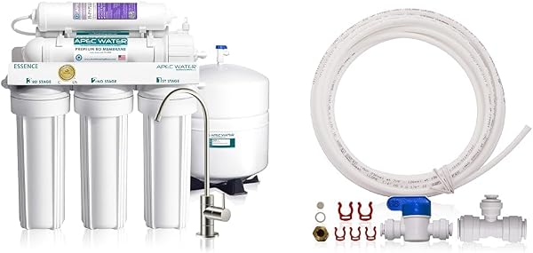
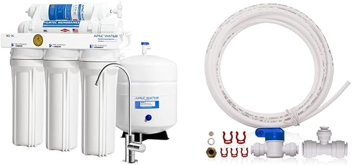
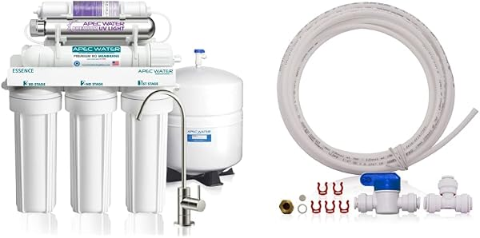

APEC Reverse Osmosis Review 2026: ROES-50, RO-90, ROES-PH75 & Ultimate Compared
PureFlow Lab is reader-supported. We may earn a commission when you buy through links in this guide — at no extra cost to you. As an Amazon Associate, we earn from qualifying purchases. See our Disclosure for details.
Top Picks (At a Glance)
The APEC lineup we cover in this review, ranked by use case:

APEC ROES-50 — 5-Stage, 50 GPD, US-Assembled
The system that built APEC’s reputation. 5-stage, NSF/ANSI 58 & 372 certified, WQA Gold Seal, US-assembled with US-made filters — and 9,000+ reviews at 4.6 stars, one of the longest track records in the category. The default pick for most homeowners who want a proven, no-drama RO system. ~$200.
Check Price on Amazon →
APEC ROES-PH75 — 6-Stage Alkaline pH+, 75 GPD
The ROES-50 with a 6th remineralization stage and a faster 75 GPD membrane. Adds calcium back after the RO process to raise pH and restore a more natural taste. The pick if flat RO water bothers you and you want it from APEC. ~$258.
Check Price on Amazon →
APEC RO-90 — 6-Stage, 90 GPD
A 90 GPD membrane — nearly double the ROES-50’s flow — for larger households that draw water faster than a 50 GPD system refills. Same APEC build quality, more throughput. ~$248.
Check Price on Amazon →
APEC Ultimate RO-PERM — Permeate Pump, High Efficiency
The smart answer to RO’s biggest weakness: wastewater. A non-electric permeate pump cuts drain water by up to 80% and boosts output and tank fill — no power needed. 4.4 stars across 200+ reviews. The pick for low water pressure or anyone who hates RO waste. ~$340.
Check Price on Amazon →
APEC ROES-PHUV75 — Alkaline + UV, 75 GPD
Adds a UV sterilization stage on top of alkaline remineralization — the UV light kills bacteria and viruses an RO membrane can miss, which matters for well water and unchlorinated sources. ~$323.
Check Price on Amazon →TL;DR: APEC is the reputation pick in reverse osmosis — the brand professionals recommend and the one with the longest proven track record. For most homeowners, the ROES-50 (~$200) is the right buy: NSF 58 & 372 certified, US-assembled, and backed by 9,000+ reviews at 4.6 stars. If RO water tastes too flat, step up to the ROES-PH75 for alkaline remineralization; for a bigger household, the RO-90 nearly doubles flow. APEC’s standout move is the Ultimate RO-PERM — a permeate pump that slashes wastewater up to 80%, the tank-based answer to tankless efficiency. Well-water owners want the ROES-PHUV75 for its UV stage. See how APEC stacks up against the competition in our APEC vs iSpring vs Waterdrop showdown.
If you ask a plumber or a water-treatment pro which under-sink RO system to buy, APEC’s name comes up more than almost any other. The brand has spent over a decade building a reputation for exactly one thing: reliable, well-built, proven reverse osmosis that just works. This review covers APEC’s full RO lineup with honest assessments of where each model wins.
About APEC Water Systems
APEC Water Systems is a US company based in City of Industry, California. Unlike most residential RO brands, APEC assembles its flagship systems in the USA and uses US-made filters — a genuine differentiator in a category dominated by overseas manufacturing. The brand has built its name on professional-grade reliability rather than flashy features.
The brand’s core differentiators:
- Reputation and track record. The ROES-50 has over 9,000 reviews and has been a category staple for more than a decade. APEC is the brand most often recommended by people who install or service RO systems professionally.
- US assembly and US-made filters. APEC’s Essence-series systems are assembled in the USA with US-sourced filters, which matters for quality control and for buyers who specifically want to avoid fully-imported systems.
- WQA Gold Seal + NSF certifications. APEC systems carry NSF/ANSI 58 (RO performance) and 372 (lead-free), plus the WQA Gold Seal — the certification stack that matters for trustworthy drinking water.
- US-based support and long warranties. APEC offers US-based technical support and extended warranty coverage — a real advantage when you have a question two years into ownership.
- Permeate-pump efficiency option. APEC’s Ultimate RO-PERM line uses a non-electric permeate pump to cut wastewater dramatically — addressing RO’s biggest environmental and cost criticism without going tankless.
What APEC doesn’t lead on: tankless design (the lineup is overwhelmingly tank-based, though APEC has recently introduced a tankless pH+ model), smart features (no app, no leak detection, no TDS display), and the lowest possible price (the Express Water RO5DX undercuts the ROES-50). APEC competes on reliability and reputation, not gadgets.
A Note on APEC’s Model Names (2026 Update)
APEC re-organized its catalog in 2024-2025 under “Essence Series” and “Ultimate Series Top Tier” branding, and several models moved to new Amazon listings. Here’s what the naming means in 2026:
- ROES-50 — the original 5-stage, 50 GPD flagship. The icon, and still the default recommendation.
- ROES-PH75 — adds a 6th alkaline remineralization stage and a 75 GPD membrane.
- RO-90 — 6-stage, 90 GPD for higher flow.
- ROES-PHUV75 — alkaline + UV sterilization, for well water.
- Ultimate RO-PERM — adds a permeate pump for efficiency (less waste, more output).
- ROES-100 — a 100 GPD high-output 5-stage alternative.
If you see review counts that look low on the newer Essence/Ultimate listings, that’s the re-SKU at work — not a sign of an unproven product. The underlying systems are the same long-running APEC designs.
Top Picks Detailed
Best Overall: APEC ROES-50
The APEC ROES-50 is the right APEC pick for most homeowners and the system that earned the brand its reputation. Five stages (sediment, two carbon blocks, RO membrane, post-carbon polish), NSF/ANSI 58 & 372 certified, WQA Gold Seal, 50 GPD output, and a long-life filter design. 9,000+ reviews at 4.6 stars — one of the most-proven systems in the entire category.
What you’re paying for here is reliability and reputation. The ROES-50 isn’t the cheapest (the Express Water RO5DX undercuts it) and it isn’t tankless, but it’s the system that water-treatment professionals consistently point to when asked for a recommendation they trust. US assembly, US-made filters, and US-based support back it up.
The trade-offs are standard tank-based ones: a ~3-gallon storage tank takes under-sink cabinet space, and the 50 GPD membrane refills more slowly than a high-flow or tankless system. For a normal household’s drinking and cooking water, neither is a real limitation.
Pros: Strongest reputation in the category, US-assembled with US-made filters, NSF 58 & 372 + WQA Gold Seal, 9,000+ reviews at 4.6 stars, US-based support and long warranty. Cons: Tank-based (takes cabinet space), 50 GPD is slower-refilling, no alkaline remineralization in the base model, pricier than budget brands like Express Water.
Price at last check: $199.95. Check Price on Amazon →
Best Alkaline: APEC ROES-PH75
The APEC ROES-PH75 is the ROES-50 with the most-requested upgrade: alkaline remineralization. It adds a 6th stage that puts calcium and minerals back into the water after the RO membrane strips them out, raising the pH and restoring the more natural, less “flat” taste that some people miss in RO water. It also steps up to a 75 GPD membrane for faster flow.
This is APEC’s answer to the iSpring RCC7AK, which builds alkaline in at a lower price. If brand reputation and US assembly matter to you more than saving $20-40, the ROES-PH75 is the APEC way to get alkaline water; if price leads, compare it against the iSpring in our showdown.
Pros: Alkaline remineralization fixes flat RO taste, faster 75 GPD flow than the ROES-50, same APEC build quality and support. Cons: More expensive than the base ROES-50 and than competing alkaline systems, extra stage means an additional replacement filter over time, tank-based.
Price at last check: $257.61. Check Price on Amazon →
Best High-Flow: APEC RO-90
The APEC RO-90 puts a 90 GPD membrane in the APEC chassis — nearly double the ROES-50’s 50 GPD. For a large family that draws filtered water faster than a 50 GPD system can refill its tank, the RO-90 keeps up where the ROES-50 would leave you waiting.
The extra flow is the whole story here; everything else is standard APEC quality. If your household is small to average, the ROES-50’s 50 GPD is plenty and the RO-90 is unnecessary. If you have a big family, a pot-filler habit, or you just hate waiting on the tank, the RO-90 is the comfortable choice.
Pros: 90 GPD nearly doubles the ROES-50’s flow, same APEC reliability, good for large households. Cons: Overkill for small/average homes, tank-based, newer Essence-series listing has a low review count (the design itself is long-running).
Price at last check: $247.57. Check Price on Amazon →
Best Efficiency: APEC Ultimate RO-PERM (Permeate Pump)
The APEC Ultimate RO-PERM is the most interesting system in APEC’s lineup, because it tackles reverse osmosis’s biggest weakness head-on: wastewater. Standard tank-based RO systems send roughly 3-4 gallons to the drain for every gallon of pure water. The RO-PERM adds a non-electric permeate pump that cuts that drain water by up to 80% while also increasing output and filling the tank faster — all without using any electricity.
This is APEC’s answer to the efficiency argument that tankless brands like Waterdrop make. Instead of redesigning the whole system around a tankless architecture, APEC bolts on a clever mechanical pump that recovers energy from the wastewater stream to do the work. It’s especially valuable if you have low household water pressure (which cripples standard RO systems) or if you’re on a well and paying to pump and treat every gallon you waste.
Pros: Cuts wastewater up to 80%, boosts output and tank fill, no electricity required, excellent for low water pressure, 200+ reviews at 4.4 stars. Cons: Significantly pricier than the ROES-50, more complex install, still tank-based (takes cabinet space).
Price at last check: $339.99. Check Price on Amazon →
Best for Well Water: APEC ROES-PHUV75
The APEC ROES-PHUV75 combines alkaline remineralization with a UV sterilization stage. The UV matters specifically for well water: an RO membrane is excellent at removing dissolved solids and contaminants, but it’s not a guaranteed barrier against bacteria and viruses. Municipal water is already chlorinated, so this is rarely an issue on city water — but well water has no disinfection, which is exactly why well owners need UV.
The ROES-PHUV75 closes that gap, deactivating bacteria and viruses as the water passes through, while also giving you APEC’s alkaline-remineralized taste. If you’re on a well, also read our whole house RO guide — well water often needs upstream treatment (sediment, iron) before any point-of-use RO system to protect the membrane.
Pros: UV stage closes RO’s microbiological gap (essential for well water), alkaline remineralization included, APEC build quality. Cons: Most expensive APEC under-sink system here, UV bulb is an annual replacement cost, well water may need upstream pre-treatment the system doesn’t include.
Price at last check: $322.74. Check Price on Amazon →
What Sets APEC Apart
Three things genuinely distinguish APEC from the competition:
1. The reputation is earned, not marketed. APEC doesn’t win on features or price — it wins because the systems are reliable year after year, and the people who install RO for a living trust them. The ROES-50’s 9,000+ reviews and decade-plus track record are the kind of proof that’s hard to fake.
2. US assembly and US-based support. APEC’s Essence-series systems are assembled in the USA with US-made filters, and the company offers US-based technical support. When you have a question or a problem two years in, that support is a real, tangible advantage over brands that are harder to reach.
3. The permeate-pump option. The Ultimate RO-PERM is a genuinely clever answer to RO’s wastewater problem — an 80% reduction in drain water without electricity or a tankless redesign. No budget brand offers anything like it.
What APEC Could Do Better
Three honest weaknesses:
1. The lineup is overwhelmingly tank-based. APEC has only recently dipped into tankless (a new tankless pH+ model exists), but the core lineup all uses storage tanks. If you want the modern tankless experience — no tank, reclaimed cabinet space, 600 GPD on demand — Waterdrop is the brand to look at.
2. No smart features. No app, no leak detection, no TDS display. APEC is proudly mechanical and simple, which many buyers prefer — but if you want smart monitoring, you’ll need to look elsewhere or step up to the new tankless model.
3. The 2024-2025 re-SKU is confusing. Moving the catalog to “Essence Series” and “Ultimate Series Top Tier” listings reset review counts on several models, which makes some genuinely proven systems look unproven on Amazon. New buyers have to know that the low-review RO-90 or ROES-PH75 listings are the same long-running designs, just re-listed.
APEC vs Competitors
vs iSpring RCC7AK: The closest head-to-head. iSpring’s RCC7AK builds in alkaline remineralization at a lower price than APEC’s ROES-PH75, and its top-mount faucet is easier to install. APEC counters with US assembly, the stronger build-quality reputation, and US-based support. See the full breakdown in our APEC vs iSpring vs Waterdrop showdown.
vs Waterdrop G3P600: APEC is tank-based, proven, and roughly half the price; Waterdrop is tankless, higher-tech, with the fuller NSF stack and a better wastewater ratio out of the box. Interestingly, APEC’s permeate-pump RO-PERM narrows the efficiency gap that’s usually Waterdrop’s advantage. APEC for reliability and value; Waterdrop for technology.
vs Express Water RO5DX: Express Water undercuts the ROES-50 on price and offers modular expandability. APEC counters with US assembly, the longer track record, and US-based support. Express Water for the lowest price; APEC for the safest long-term bet.
For the full field, see our best reverse osmosis systems guide.
Comparison Table
| Model | Stages | GPD | Standout Feature | NSF Certs | Price |
|---|---|---|---|---|---|
| ROES-50 | 5 | 50 | The proven icon, 9,000+ reviews | 58, 372 + WQA | $200 |
| ROES-PH75 | 6 | 75 | Alkaline remineralization | 58, 372 + WQA | $258 |
| RO-90 | 6 | 90 | High flow for big households | 58, 372 + WQA | $248 |
| Ultimate RO-PERM | 5 | 50+ | Permeate pump, –80% waste | 58, 372 + WQA | $340 |
| ROES-PHUV75 | 7 | 75 | Alkaline + UV (well water) | 58, 372 + WQA | $323 |
Buyer Scenario Decision Matrix
Match your situation:
| Your Situation | Right APEC Pick | Why |
|---|---|---|
| First RO system, want a proven choice | ROES-50 | The category icon, US-assembled, 9,000+ reviews |
| RO water tastes too flat | ROES-PH75 | Alkaline remineralization restores taste |
| Large household, want faster flow | RO-90 | 90 GPD nearly doubles the ROES-50’s output |
| Low water pressure or hate RO waste | Ultimate RO-PERM | Permeate pump cuts waste up to 80%, no power |
| On well water | ROES-PHUV75 | UV stage kills bacteria/viruses RO can miss |
| Want tankless + smart features | Look at Waterdrop instead | APEC’s core lineup is tank-based |
| Want the lowest price | Compare the Express Water RO5DX | Undercuts the ROES-50 |
| Want RO at every tap in the house | Look elsewhere — see our whole house RO guide | APEC’s lineup is point-of-use |
FAQ
Is APEC a good reverse osmosis brand?
Yes — APEC is one of the most respected RO brands in 2026, with the strongest reputation for reliability and the longest track record. Its flagship ROES-50 has 9,000+ reviews at 4.6 stars and is US-assembled with US-made filters. The main trade-offs are that the lineup is mostly tank-based (no widely-available tankless) and there are no smart features. For buyers who prioritize a proven, well-supported system over gadgets, APEC is a top choice.
Is the APEC ROES-50 worth it?
For most homeowners, yes. The ROES-50 is the safest “buy it and forget it” RO system — proven over a decade, US-assembled, NSF 58 & 372 certified, and backed by US-based support. It’s not the cheapest (the Express Water RO5DX undercuts it) and it’s not tankless, but it’s the system professionals trust most.
What’s the difference between the APEC ROES-50 and ROES-PH75?
The ROES-50 is a 5-stage base system. The ROES-PH75 adds a 6th alkaline remineralization stage (puts minerals back for better taste) and a faster 75 GPD membrane. If you like how RO water tastes, save money with the ROES-50; if it tastes too flat, get the ROES-PH75.
What is the APEC permeate pump and is it worth it?
The permeate pump in the Ultimate RO-PERM is a non-electric device that cuts RO wastewater by up to 80% while boosting output and tank fill. It’s worth it if you have low household water pressure (which otherwise cripples RO performance), if you’re on a well and pay for every gallon, or if RO’s typical 3:1 or 4:1 waste ratio bothers you. For a standard home on city water with good pressure, the basic ROES-50 is fine.
Where are APEC systems made?
APEC Water Systems is based in City of Industry, California, and assembles its Essence-series systems in the USA with US-made filters. This US assembly is a genuine differentiator in a category where most systems are fully imported, and it’s a big part of why the brand is trusted for quality control.
Does APEC make a tankless or whole-house RO system?
APEC’s core lineup is tank-based point-of-use, but the brand recently introduced a tankless alkaline pH+ model. For a mature tankless option, Waterdrop is the established choice. APEC does not make a whole-house RO system — for RO at every tap, see our best whole house RO systems guide.
How long do APEC filters last?
APEC’s pre-filters (sediment and carbon) typically last 6-12 months; the RO membrane lasts 2-4 years; the final post-carbon stage lasts about a year. APEC filters are long-life and reasonably priced, and the company’s US-based support makes sourcing replacements straightforward. Budget roughly $50-$70/year on filters for the standard models.
Bottom Line: Which APEC Should You Buy?
For most homeowners: the APEC ROES-50 at ~$200. The category icon — proven, US-assembled, NSF 58 & 372 certified, and backed by 9,000+ reviews. This is the default pick.
If RO water tastes too flat: the ROES-PH75 (~$258) adds alkaline remineralization and faster 75 GPD flow.
For a large household: the RO-90 (~$248) nearly doubles the flow.
If you have low water pressure or hate RO waste: the Ultimate RO-PERM (~$340) cuts wastewater up to 80% with its permeate pump — APEC’s smartest system.
On well water: the ROES-PHUV75 (~$323) adds the UV stage well water needs.
If you want tankless, smart features, or the lowest price: APEC isn’t your brand for the first two — see our Waterdrop review. For the lowest price, compare the Express Water RO5DX. And see how APEC stacks up head-to-head in our APEC vs iSpring vs Waterdrop showdown.
Ready to buy?
Check current pricing on whichever APEC system fits your situation. Your clicks keep these guides free.
Shop All APEC RO Systems on Amazon →
Found this useful? Share it with someone shopping proven RO systems.
Keep Reading
- Best Reverse Osmosis Systems for Home — APEC compared against all major competitors
- APEC vs iSpring vs Waterdrop Showdown — the three top under-sink systems head-to-head
- iSpring Reverse Osmosis Review — APEC’s closest head-to-head rival
- Waterdrop Reverse Osmosis Review — the tankless premium alternative
- Express Water Reverse Osmosis Review — the budget value alternative
- Whole House RO vs Under-Sink RO — decision framework
- Best Whole House Reverse Osmosis Systems — for RO at every tap